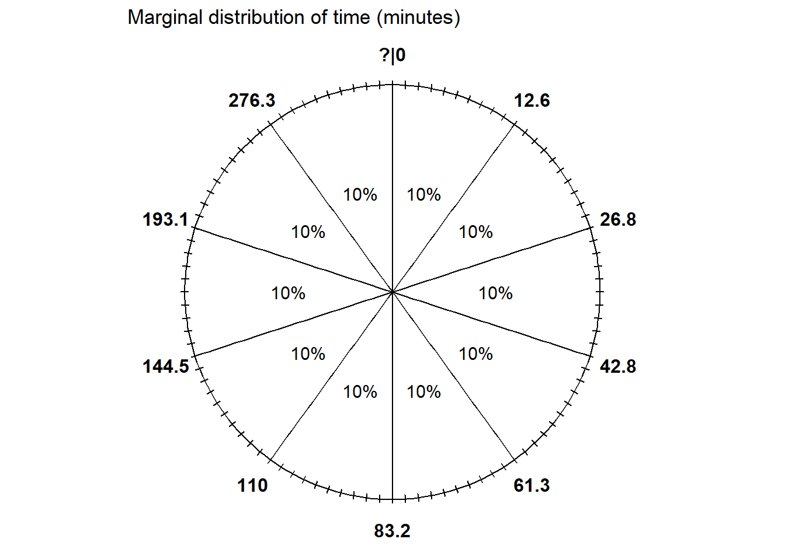
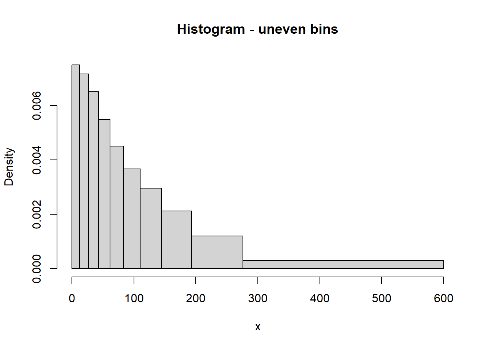
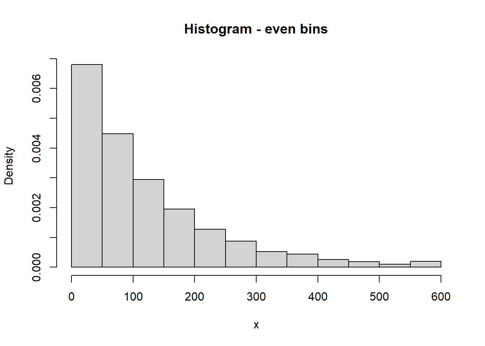

| Percentile | Value (minutes) |
|---|---|
| 10th | 12.6 |
| 20th | 26.8 |
| 30th | 42.8 |
| 40th | 61.3 |
| 50th | 83.2 |
| 60th | 110.0 |
| 70th | 144.5 |
| 80th | 193.1 |
| 90th | 276.3 |
Homework 5 solutions
Problem 1
In a certain region, times (minutes) between occurrences of earthquakes (of any magnitude) have a distribution with percentiles displayed in the table below.
- Construct a spinner corresponding to this distribution.
- What percent of times are between 26.8 and 110.0 minutes?
- Let \(F\) be the cdf. Evaluate and interpret \(F(42.8)\).
- Let \(Q\) be the quantile function. Evaluate and interpret \(Q(0.9)\).
- Sketch (by hand) a histogram of this distribution.
Solution
- See below. The 50th percentile goes at “6 o’clock” (50% of the way around), etc.
- 60% are below 110.0 and 20% are below 26.8, so 40% are between 26.8 and 110.0 minutes.
- \(F(42.8)=\text{P}(X \le 42.8) = 0.3\), since 42.8 minutes is the 30th percentile.
- \(Q(0.9) = 276.3\), since 276.3 minutes is the 90th percentile.
- We always end with a histogram with even bins, but sometimes it helps to start sketching a histogram with unever bins. We know that 10% of the values are between 0 and 12.6, 10% are between 12.6 and 26.8, 10% are between 26.8 and 42.8, etc. So if we split the bins of the histogram based on these percentiles, each bin would correspond to a relative frequency of 10%. HOWEVER, AREA in a histogram represents relative frequency. So each of the bins would have the same area, but they are unequally spaced, so they would not have the same height. For example, the first bin has area of 10% over a base of (0, 12.6), while the 80-90 percentile bin has area 10% spread over the interval (193.1, 276.3), so the bar for (193.1, 276.3) will have a smaller height than the bar for (0, 12.6). Sketching a histogram with these unevenly spaced bins first gives an idea of the shape; then you can sketch a histogram with a similar shape but equally spaced bins. We can see that density is highest near 0 and decreases as \(x\) increases; notice the stretching and shrinking on the spinner. (The highest percentile is the 90th, so we don’t know what the upper bound is that almost all values fall below.)



Problem 2
Recall Example 2.6. Regina and Cady are meeting for lunch. Suppose they each arrive uniformly at random at a time between noon and 1:00, independently of each other. Record their arrival times as minutes after noon, so noon corresponds to 0 and 1:00 to 60. Recall the sample space from Example 2.2 and assume a uniform probability measure \(\text{P}\).
Let \(R\) be Regina’s arrival time and \(Y\) Cady’s. Then \(W = |R - Y|\) is the amount of time (minutes) the first person to arrive waits for the second person to arrive. It can be shown that \(W\) has pdf \[ f_W(w) = (2/3600)(60-w), \qquad 0<w<60. \]
- Let \(F\) be the cdf. Evaluate and interpret \(F(15)\).
- Find an expression for the cdf of \(W\). Set up an integral, but sketch a picture and use geometry to compute.
- Find and interpret the 25th percentile of \(W\). (You can do the next part first if you want, but it might help to start with a specific number like in this part.)
- Find the quantile function of \(W\).
- Sketch a spinner corresponding to the distribution of \(W\). Label the 25th, 50th, and 75th percentiles.
Solution
- \(F(15)=\text{P}(W \le 15)\), which we computed on a previous HW to be \(1 - (1-15/60)^2 = 0.4375\). If they meet like this over many days, on about 44% of days the first person needs to wait at most 15 minutes for the second person to arrive.
- Similar to computing \(F_W(15) = \text{P}(W\le 15)\) from an earlier problem, but replace 15 with a generic \(w\) (and remember to change the dummy variable of integration). For \(0<w<60\), \[ F_W(w) = \text{P}(W \le w) = \int_0^{w} (2/3600)(60-u)du = 1 - (1-w/60)^2 \] Technically the cdf is defined for any value of \(w\), so it’s really \[ F_W(w) = \begin{cases} 0, & w \le 0\\ 1 - (1-w/60)^2, & 0 < w < 60\\ 1, & w\ge 60 \end{cases} \]
- The 25th percentile satisfies \[ 0.25 = \text{P}(W \le w) = F_W(w) = 1 - (1 - w/60)^2 \] Solve to get \(w= 60(1-\sqrt{1-0.25})= 8.03\). The waiting time is at most (about) 8 minutes on 25% of days.
- To find the \(p\) percentile, use the same process as in in the previous part. \[ p = \text{P}(W\le w) = F_W(w) = 1 - (1 - w/60)^2 \] Solve to get \(w=60(1-\sqrt{1-p)}\). So the quantile function is \(Q_W(p) = 60(1 - \sqrt{1-p}), 0\le p\le 1\).
- See spinner below. We can use the quantile function to label the spinner.
- The 25th percentile of \(Q_W(0.25) = 60(1 - \sqrt{1-0.25}) = 8.02\) minutes would go at the “3 o’clock” point.
- The 50th percentile of \(Q_W(0.5) = 60(1 - \sqrt{1-0.5}) = 17.57\) minutes would go at the “6 o’clock” point.
- The 75th percentile of \(Q_W(0.75) = 60(1 - \sqrt{1-0.75}) = 30\) minutes would go at the “9 o’clock” point.
- Notice that the values around the spinner are unequally spaced. The density of \(W\) is higher near 0 so intervals near 0 are stretched out; the density of \(W\) is lower near 60 minutes so intervals near 60 are shrunk.

Problem 3
Continuing Problem 2. For this problem you should set up integrals when appropriate but you can use software to compute them.
- Explain in full detail how you could use simulation to approximate
- \(\text{E}(W)\)
- \(\text{E}(W^2)\)
- \(\text{Var}(W)\) (explain how you can do it directly without using the previous part.)
- Compute and interpret \(\text{E}(W)\).
- Compute \(\text{E}(W^2)\).
- Compute \(\text{Var}(W)\)
- Compute and interpret \(\text{SD}(W)\).
- Compute the probability that \(W\) is more than 1 SD away from its mean.
Solution
- Simulate many values of \(W\) (e.g., using the spinner from the previous part).
- Average the values of \(W\) to approximate \(E(W)\).
- Square each simulated value of \(W\) and average the \(W^2\) values to approximate \(E(W^2)\).
- For each simulated value of \(W\), subtract the average of \(W\) and square to get the squared deviation and average the squared deviations to approximate \(\text{Var}(W)\).
- Use the definition of EV for continuous RV \[ \text{E}(W) = \int_0^{60} w f_W(w) dw = \int_0^1 w\left(2/3600(60-w)\right)dw = 20 \] If they were to meet like this over many days, the long run average time the first person has to wait for the second person to arrive is 20 minutes.
- Use LOTUS \[ \text{E}(W^2) = \int_0^{60} w^2 f_W(w) dw = \int_0^{60} w^2\left(2/3600(60-w)\right)dw = 600 \]
- We did all the work in the previous parts. \(\text{Var}(W) = \text{E}(W^2) - \text{E}(W)^2 = 600 - (20)^2 = 200\) square-minutes.
- \(\text{SD}(W) = 14.1\) minutes
- \(\text{P}(|W-\text{E}(W)|>\text{SD}(W)) = \text{P}(W>20 + 14.1) + \text{P}(W < 20 - 14.1)\). In this case you can find the corresponding probability/area in this case with geometry. Also, integrating gives \[ \int_0^{20 - 14.1} 2/3600(60-w)dw + \int_{20 + 14.1}^1 2/3600(60-w)dw = 0.37 \]
Problem 4
Lifetimes of a certain type of component are Exponentially distributed with mean 20 thousand hours.
- Approximate the probability that the lifetime, rounded to the nearest thousand hours, of a randomly selected component is 30 thousand hours.
- Compute the probability that a randomly selected component has a lifetime greater than 30 thousand hours.
- Compute the standard deviation of component lifetimes.
- Suppose a device contains 2 such components connected in series, so that the system functions only if both of the components are functioning. Suppose the component lifetimes are independent of each other. Compute the probability that the device has a lifetime greater than 30 thousand hours.
- Let \(T\) be the lifetime of the device. Compute \(\text{P}(T > t)\).
- Identify the distribution of \(T\) by name, including the values of any relevant parameters.
Solution
For a single component the pdf of lifetime \(X\) (thousand hours) is $f(x) =(1/20)e^{-x/20}, x>0 $
- The probability that the lifetime, rounded to the nearest thousand hours, of a randomly selected component is 30 thousand hours is approximately \(f(30)(1)\); the (1) is because we’re rounding to the nearest 1 thousand hours. \(f(30)(1) = (1/20)e^{-30/20}(1) = 0.011\).
- For Exponential \(P(X > 30) = e^{-30/20} = 0.223\).
- For Exponential the SD and the EV are the same, 20 thousand hours.
- Let \(X_1, X_2\) be the lifetime of the two components. The device functions only in both components function \[\begin{align*} P(T > 30) & = P(X_1 > 30, X_2 > 30) & & \\ & = P(X_1 > 30)P(X_2>30) & & \text{independence}\\ & = e^{-30/20}e^{-30/20} & & \text{Exponential}\\ & = e^{-(2/20)30} = 0.05 \end{align*}\]
- Same as the previous calculation with 30 replaced by \(t>0\). \[\begin{align*} P(T > t) & = P(X_1 > t, X_2 > t) & & \\ & = P(X_1 > t)P(X_2>t) & & \text{independence}\\ & = e^{-t/20}e^{-t/20} & & \text{Exponential}\\ & = e^{-(2/20)t} \end{align*}\]
- The previous calculation shows that the cdf of \(T\) follows an Exponential form, so \(T\) has an Exponential distribution with rate parameter 2/20=0.1 and mean 10 thousand hours.